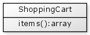
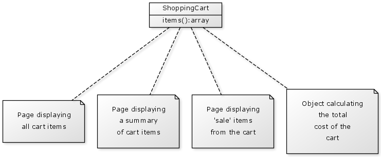
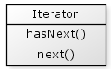
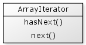
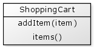
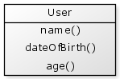
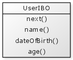

One of the fundamental aspects of our daily work involves using data structures that contain many items. These include lists, arrays, structs and queries, and perhaps more sophisticated data structures such as trees. Each of these data structures requires a different approach to loop through their elements. For example, an array uses a numeric index, a struct uses a named key index, list items are accessed sequentially without any kind of index, etc.
In object oriented CFML these data structures are typically created and used within components. When we need to use these data structures we can just create a function on the component that returns the required data.
For example, if you were writing a shopping cart you might store your items in an array, then have a function items() which simply returns your array of items.

Your application may need to access the set of items from many places throughout your code:

If your cart code is unlikely to change much then this is a clean and simple approach, however if you needed to change the data type of the items from an array to a struct then you would need to update every place in your application where the items were referenced and change the loop from an array loop to a struct loop.
Whenever you have an object returning one of it's internal data structures you may be revealing details about how your object was implemented. As a general design guideline we want to minimise exposing how our objects are implemented internally. In the case of our shopping cart it would be nice if we could hide the fact that we are actually using an array to internally store the items.
An Iterator provides a generalised technique for sequentially accessing elements from a group and allows you to hide the real data structure of your items.
An Iterator is an object that is wrapped around your data structure and simply keeps track of the next item that should be made available. There are a number of approaches to designing Iterators but a common approach requires that every Iterator implement two functions: hasNext() and next().

The hasNext() function returns either true or false indicating if another item available from the set.
The next() function returns the next element from the set.
So to use an Iterator in code, you may write:
{% highlight cfm %}You will notice that when using an Iterator we have no knowledge of how the data was originally stored. It may have been an array, a struct, a list, etc. but this information is now hidden. And as a user of the iterator we are not concerned with whatever the original data structure was, we only need a technique for accessing all elements of the set.
Let's create an generic ArrayIterator that allows us to iterate over array elements. We know that we need to implement the two functions hasNext() and next(), so our ArrayIterator will look something like this:

We will provide the array as a parameter to the ArrayIterators init() function.
{% highlight cfm %}Now let's implement the hasNext() function. To implement this we need to keep track of the index to the next element of our array. We know that we have a next element available if this index is less than or equal to the length of our array.
{% highlight cfm %}Lastly, let's add our next() function. This fetches the next element of the array, then increments the index by one ready for the next element.
{% highlight cfm %}To use our Array Iterator we may write:
{% highlight cfm %}This is a simple example only and does not include any error or multiple thread handling.
Let's write a simple example of a shopping cart that makes use of our ArrayIterator.

addItem(item) adds an item to our cart.
items() returns an iterator of all shopping cart items.
This may be implemented as follows:
{% highlight cfm %}Then using our shopping cart we may have:
{% highlight cfm %}Within CFML there is a performance penalty associated with creating objects, and this becomes more apparent when dealing with many objects. For example, if you perform a query that returns one hundred or so records, then converting each record to an object will have a noticeable performance impact on your application.
An Iterating Business Object (IBO) is a pattern made popular by Peter Bell that is specific to the CFML language. It allows the benefits of objects without the performance problems of object creation. An IBO appears as though it were a regular object, but at the same time is also an Iterator that contains a set of many data items.
Let's consider a User object with the functions name(), dateOfBirth() and age().

Objects of this kind only contain the data for a single user.
Now, let's create a User IBO, which has the same set of functions, plus an additional next() function. Notice that we are using a different name for this object to distinguish it from a conventional business object.

Objects of this kind wraps the data for many users, but the IBO behaves as though it was only one of those users. Internally it is keeping track of which users' data is the "current" data.
The next() function tells the IBO to change itself internally so it should start behaving like the next User in the set. Unlike the next() function in the Iterator pattern described above which returns the next element from the set, this function returns either true or false to indicate if it has current valid data.
Let's take a look at how an IBO might be used.
{% highlight cfm %}We can see that the IBO is behaving like both an iterator and a regular business object.
Query data is perhaps the most common scenario where an IBO may be useful, so let's develop an IBO to iterate over a query of users.
First, we need to provide our query data to the IBO's init() function:
{% highlight cfm %}To implement our next() function we will need to keep track of which record from the query data we are up to. When our "currentRow" pointer has a higher value than the number or records in the query then we know that there is no more data available.
{% highlight cfm %}Now let's implement our name(), dateOfBirth() and age() functions, which makes use of accessing query data as an array.
{% highlight cfm %}To use our UserIBO we may have something like:
{% highlight cfm %}This is only a simple example that does not include error or multiple thread handling.
Let's take a quick review of the advantages and disadvantages for an IBO.
IBOs are most commonly used when we need to work a large number of objects, such as data returned from a database query.
The choice of using an IBO versus using the original data really depends on how much behaviour you would include in your object. For example, if you have a query of users and the only additional behaviour you need is to calculate the age for each record then it may be better to include this as a calculated column and then just use the query data. However if you have a lot of extra functionality in your object that would be messy or complicated to include in the original query then an IBO may be a better option.
Within ColdFusion we also have the option of accessing the underlying Java iterators for arrays and structs.
For an array, we can use the following:
{% highlight cfm %}For a struct, we can use:
{% highlight cfm %}It is important to note that if your original array or struct is modified while you are iterating though their elements then an error will occur. If this is a possible situation then you can copy your array or struct before retrieving it's iterator.
The description of the iterators we have discussed so far include at most a hasNext() function and a next() function.
This very simple interface allows you to easily change the underlying implementation without affecting any client code using the iterators. There may be some situations where some additional functions may be useful to include.
Keep in mind that by adding any of these functions you may limit your flexibility in changing the underlying implementation in the future. For example if you expose a count() or previous() function, then you would not be able to substitute in a Java iterator as these functions are not supported.
Wikipedia - Iterator pattern
http://en.wikipedia.org/wiki/Iterator_pattern
Wikipedia - Iterator
http://en.wikipedia.org/wiki/Iterator
Dave Shuck - Converting ColdFusion Arrays to Java Iterators
http://daveshuck.instantspot.com/blog/2006/05/17/Converting-ColdFusion-Arrays-to-Java-Iterators
There are a couple of projects that provide generic implementations for iteration:
Collection Iterator - Brian Kotek (ColdFusion 9)
http://collectioniterator.riaforge.org/
Iterating Business Object - Peter Bell
http://ibo.riaforge.org/
Iterator - Paul Marcotte
http://iterator.riaforge.org/
Recordset - Paul Marcotte
http://recordset.riaforge.org/